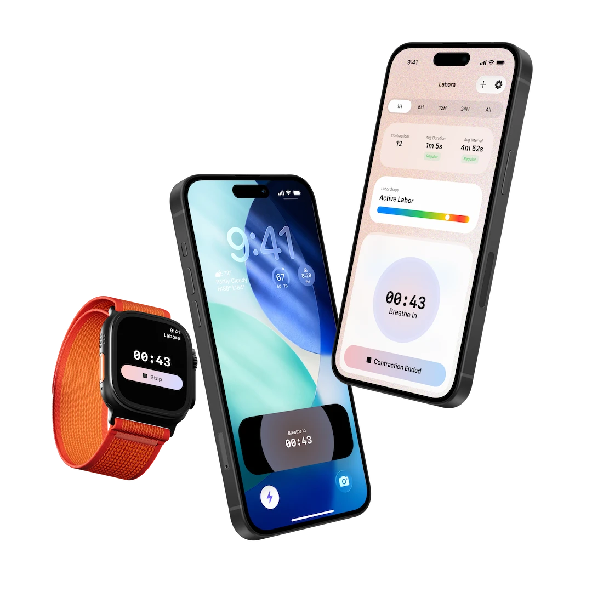

The Best Way to Time Contractions
A simple contraction timer app designed for real labor. No unlocking. No navigating. No stress.
Trusted by more than 3,000 moms worldwide
Download on the App Store
3,000+
Moms helped
120,000+
Contractions recorded
107
Countries
Start timing instantly
One tap. No fumbling. Start and stop tracking directly from your lock screen. Stay focused on breathing, not your phone.
Track from your wrist
Use Apple Watch to start and stop contractions.
See labor progress clearly
Visual timelines make it easy to understand how labor is progressing.
Focus on breathing
A simple breathing guide helps you stay calm during contractions.
Notifications for contraction patterns
Set the pattern you're watching for and Labora notifies you the moment you hit it.
Reviews
They love it,
so will you.
"I love this app!! So grateful that it's free and that there are widgets to add to my lock screen and my Home Screen. Thank you!!"
"Easiest and calmest app to use to track my contractions, free to use and didn't have lots of distracting things on the screen so I was able to focus on just my breathing."
"Free, widget works, Apple Watch widget works. Basically perfect in every way. Thank you!"
"I was looking for an app that would let my wife start a live activity using a lock screen shortcut, thought it would be impossible to find. This app was perfect during labor!"
"Thank you so much for making and sharing this app! It was just what we needed for when my wife went into labor. Really easy to use and loved the ability to start the timer from the Lock Screen."
"Finally a free timer app that actually has a widget on both the Lock Screen and Apple Watch. Super simple to use and no annoying ads popping up. And if you forget to end the contraction you can go in and edit it."
"I love that it's free and it helped me time my contractions with confidence. The Lock Screen button was so helpful!"
Hey, I'm Panittha 👋
When I was pregnant with my first baby, I looked for a contraction timer app.
But most apps were full of ads, subscriptions, and poor design.
During labor, the last thing you want is to struggle with your phone.
So I built Labora, a simple but powerful contraction timer made for real labor.
With Labora, you can start the timer directly from the Lock Screen, so you don't have to unlock your phone or search for the app.
I hope Labora is as useful to you as it was to me.
FAQ
Got questions?
Here's the answers.
- when the contraction starts
- when the contraction ends
- the time between contractions